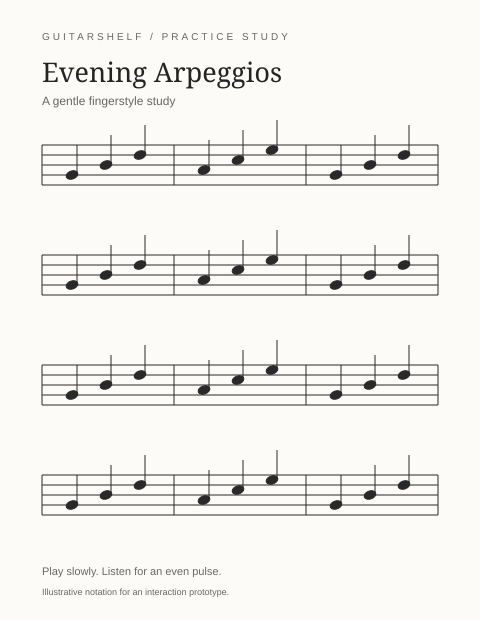
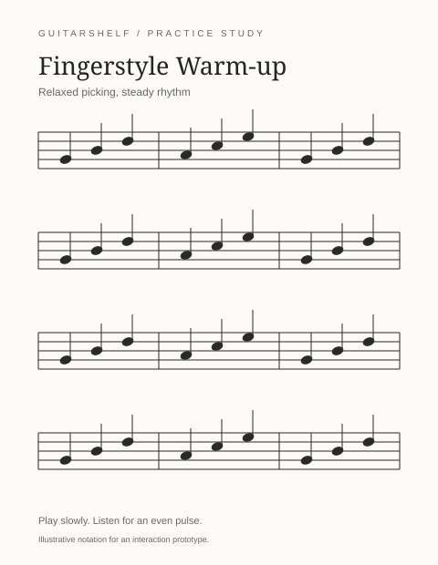
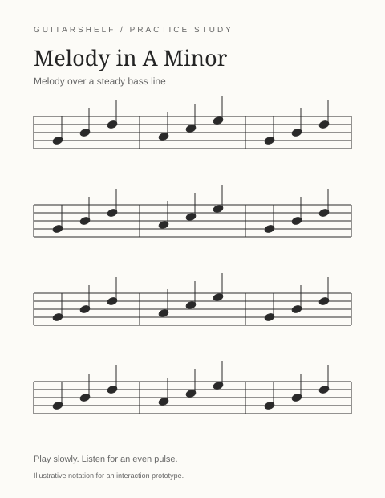

A little music. A little progress.
Find your next
piece to practice.
Guitar sheet music for beginner and intermediate players. Find a piece you
love, keep it on your shelf, and make it your own.
- 01 Find sheet music
- 02 Save a piece
- 03 Track your practice

Beginner / Standard + TAB
By M. Rivera
A gentle study for an even thumb and a clear melody.

Beginner / Standard + TAB
By J. Park
Build a relaxed picking pattern with open strings.

Intermediate / Standard + TAB
By R. Taylor
Bring out the melody above a steady bass line.